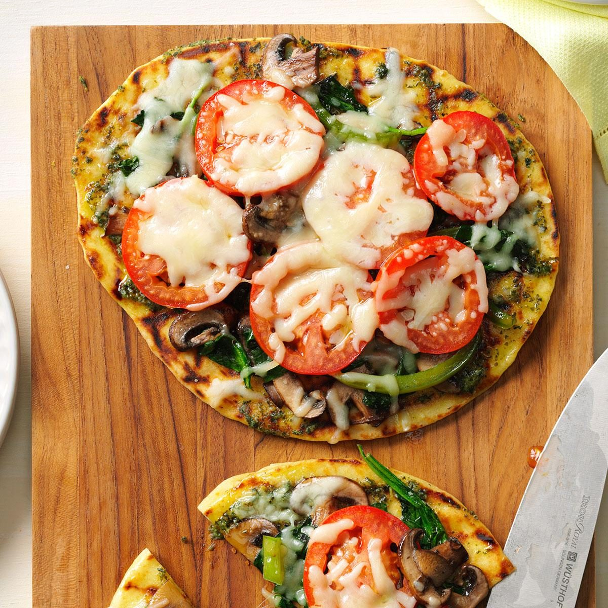

Grilled Flatbread Veggie Pizza

Description:
We pile veggies onto flatbread for a fun way to eat healthier. Our go-to
recipe for weeknights easily changes with different veggies or meats.
Ingredients:
- 1 tablespoon butter
- 1/2 pound sliced baby portobello mushrooms
- 1 large green pepper, julienned
- 4 cups fresh baby spinach (about 4 ounces)
- 1/4 teaspoon salt
- 1/8 teaspoon pepper
- 2 naan flatbreads or 4 whole pita breads
- 2 tablespoons olive oil
- 1/4 cup prepared pesto
- 2 plum tomatoes, sliced
- 2 cups shredded part-skim mozzarella cheese
Steps:
-
In a large skillet, heat butter over medium-high heat. Add mushrooms and
green pepper; cook and stir 5-7 minutes or until tender. Add spinach,
salt and pepper; cook and stir 2-3 minutes or until spinach is wilted.
-
Brush both sides of flatbreads with oil. Grill flatbreads, covered, over
medium heat 2-3 minutes on 1 side or until lightly browned.
-
Remove from grill. Spread grilled sides with pesto; top with vegetable
mixture, tomatoes and cheese. Return to grill; cook, covered, 2-3
minutes longer or until cheese is melted. Cut pizzas in half before
serving.
Nutrition Facts:
1/2 pizza: 426 calories, 28g fat (11g saturated fat), 47mg cholesterol,
1005mg sodium, 25g carbohydrate (6g sugars, 3g fiber), 20g protein.